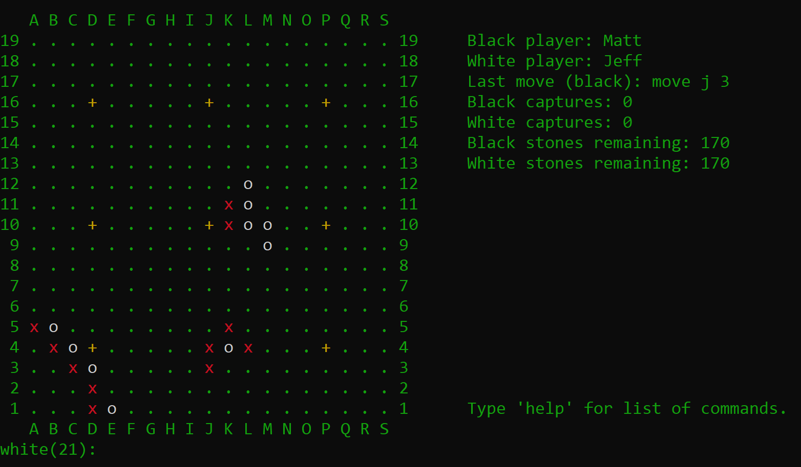

Steam Game Rating Prediction
Spring 2022
A tool for game developers that predicts the Steam rating a game may receive from a subset of game features. We scraped training data, measured feature importance for selection, and used SMOTE, sentiment analysis, and several ML algorithms (Random Forest performed best at ~56% precision).
Presentation Slides · Source Code (Cornell access)
COVID‑19 Hospitalizations Prediction for EU Countries
Spring 2021
Predicted whether hospitalizations would increase/decrease a week ahead (~70% accuracy), then regressed counts. Included custom train/validation splits, preprocessing, and multiple algorithms. Implemented in Python (scikit‑learn, NumPy, pandas) with a Jupyter report.
Source Code (Cornell access)
Game of Go
Spring 2021
A fully playable Go implementation with territory calculation, handicap, variable board sizes, and an Elo ranking system. Course final for CS 3110; built with a team of four in OCaml (functional style), runnable on Ubuntu over SSH.
Source Code (Cornell access)

3D Model of the ΦΔΘ NY Alpha Chapter House
Spring 2021
SketchUp model of my fraternity house at Cornell. Final project for CEE 3080 (Intro to CADD).
Simon Says
Spring 2021
A motion‑controlled “Simon Says” on a FRDM‑KL25Z development board. Tilt the board to match sequences using the built‑in accelerometer. Written in C with MCUXpresso IDE for CS 3420 (Embedded Systems).
Project Website
Weighted ETF Analysis
Winter 2021
Analyzed risk (covariance) vs. reward (expected return) across ETF portfolios. Visualized the efficient frontier and let users pick a target risk to compute the nearest optimal allocation. Built in C++ with a fast solver.
Source Code
Space Protector
Summer 2020
An asteroids‑like game coded from scratch after CS 1110. Mouse controls, Cartesian/polar math, and increasing difficulty. Implemented in Python with pygame.
Source Code
The Cavern
Spring 2016
A Call of Duty: World at War Zombies mod. My first 3D modeling + game design project. 5000+ downloads and multiple YouTube playthroughs.
Download Page